CoI 构建
topic → K 个查询 → K 篇 anchor → 每篇向前后延伸成链（最长 5 篇），提取 idea/实验/实体 + 趋势总结。
把检索到的文献沿引用关系拉成一条「发展链」，让 LLM 先读懂领域怎么一步步演化，再外推出下一步 idea；并用成对对战 + ELO 的 Idea Arena 做评价
这篇论文做了什么：已有 idea 生成系统（RAG、ResearchAgent 等）把一堆检索到的论文直接塞进 prompt，LLM 容易被弱相关文献带偏。CoI Agent 改为：选一篇 anchor 论文，沿引用关系向前（谁引用它）向后（它建立在谁之上）各延伸成一条最长 5 篇的链，逐篇提取 idea / 实验 / 实体，再总结相邻两篇之间的「演化趋势」，让 LLM 沿趋势预测未来方向并固化成完整 idea + 实验设计。单个 idea 成本约 $0.50。评价用自建的 Idea Arena（round-robin 成对对战 + ELO），CoI 在 LLM 和人类评审下均排自动方法第一、Novelty 甚至超过真实论文。但 ICLR 2025 以 5/5/5/8 被拒——评审的核心质疑落在「CoI 是不是 CoT 的换皮」和「ELO 评价是否可靠」上。
论文的全部动机浓缩在 Figure 1 里：同一个 topic，Vanilla RAG 把 CoT、GraphGPT、LawyerGPT 等一堆论文平铺给 LLM，产出的「新 idea」把 prompting 方法（GoT）和微调方法（GraphGPT）强行缝合；CoI 只保留 CoT→SC→ToT→GoT 这条真实演化路径，产出的 idea（动态调整推理结构）逻辑上顺着这条路径自然外推。
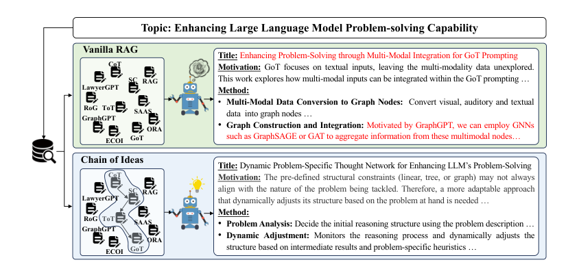
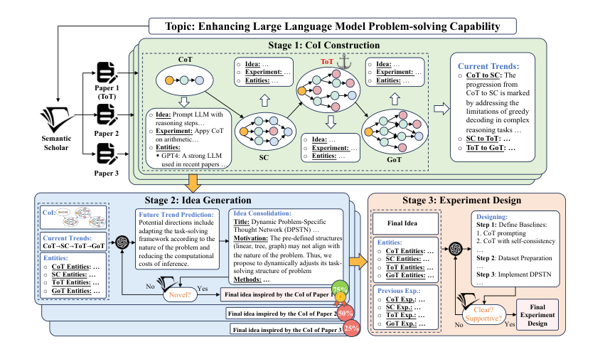
topic → K 个查询 → K 篇 anchor → 每篇向前后延伸成链（最长 5 篇），提取 idea/实验/实体 + 趋势总结。
预测未来趋势 → 依次产出 motivation / novelty / method → 固化 final idea → novelty checker 查重，不过关就带着「撞车案例」重生成。
链上论文的实验设计当 few-shot 示例；review agent 提修改意见 + 补充检索，迭代 1 轮（省钱）。
CoI 不改模型、不做训练，它的全部机制是一个检索 + 排序 + 摘要的文献组织管线。核心赌注是：对 idea 生成而言，5 篇按演化顺序排列的论文 > 10 篇乱序论文。论文的长度消融（0→3 篇链带来最大涨幅）支持这一点。这正是本档案关心的问题——idea 系统的文献模块可以只做「选对 + 排对」两件事。
这是本档案最关心的部分。论文 §3.2 的描述比较抽象，下面按代码实际执行顺序拆开（核心实现在 code/agents.py 的 DeepResearchAgent.generate_idea_with_chain 与 deep_research_paper_with_chain，检索封装在 code/searcher/sementic_search.py）。
代码确认 GPT-4o 把 topic 改写为 ≤5 个查询（1 个整体 + 若干侧面视角），每个查询将孕育一条链（get_deep_search_query_prompt）。论文主实验 K=3；main.py 默认 max_chain_numbers=1。
代码确认 Semantic Scholar relevance search 取 6 篇 → 只保留有开放获取 PDF 的（后续要用 grobid 解析全文）→ 用 text-embedding-3-large 对「标题+摘要」与 topic 算余弦相似度重排 → 取第一篇能下载解析成功的作为 anchor。检索失败会让 LLM 改写查询重试（≤10 次）。也支持 --anchor_paper_path 直接指定本地 PDF。
代码确认 用当前论文标题在 S2 搜索（limit=3，取第一个命中结果），拿它的 citations 列表（>200 时随机采样 200），按「topic + 当前论文标题 + 摘要」的 embedding 相似度重排，取第一篇能下载全文的引用者；让 GPT-4o 判断相关性（0/1），相关则入链、并以它为新的「当前论文」继续，直到链满 5 篇或判不相关。
代码确认 关键一步不靠引用图，而靠让 GPT-4o-mini 通读全文：解析出的全文（含 References 列表）交给 mini，按「方法相关 / 同任务 / 作 baseline」三条标准输出按相关性排序的 top-3 参考文献标题。代码逐个拿标题去 S2 搜索，取第一篇能下载且 GPT-4o 判相关的，入链后对它重复此过程。终止条件：链满 5 篇，或遇到引用数 >1000 的「里程碑论文」（citations_conut > 1000，字段名的拼写错误也原样写进了代码）。
代码确认 每篇入链论文由 mini 一次性提取 idea（Background/Novelty/Contribution/Reason/Limitation 五段）、实验设计、实体（模型/数据集/指标名），提取 prompt 即 get_deep_reference_prompt。链建完后 GPT-4o 汇总「Paper i → Paper i+1」的逐步演化趋势（trend），实体列表另行合并去重。链、趋势、实体、历史实验四样东西就是后续 idea 生成的全部上下文。
审计 ①：向前延伸的「相关性把关」判错了对象。论文说“LLM 发现没有有价值的后续工作时停止”（§3.2 + 附录 Table 6 prompt）。但 agents.py:307 传给判断 prompt 的是 current_title, current_abstract——即已在链中的当前论文，而不是新找到的候选引用者 citation_paper：
# agents.py L302-311（向前延伸循环内）
citation_paper = await self.reader.search_related_paper_async(current_title, ...)
title = citation_paper.title
prompt = get_deep_judge_relevant_prompt(current_title, current_abstract, self.topic)
# ^^^^^^^^^^^^^ 判的是链内旧论文，不是候选者结果是：只要「已入链论文」与 topic 相关（几乎恒真），embedding 重排后的第一篇引用者就无条件入链。论文声称的 LLM 质量闸门在向前方向从未真正生效，链的向前质量实际只由 embedding 相似度保证。向后延伸的 fallback 分支（agents.py:368）有同样的判错对象问题（主路径 agents.py:342 判的才是候选论文）。
审计 ②：链长不足 3 时强行凑链。agents.py:346 的入链条件是 relevant != "0" or len(idea_chain) < self.min_chain_length——链短于 min_chain_length=3 时即使 LLM 判定不相关也照样加入。论文从未提到这个「保底凑链」逻辑，它意味着弱相关领域里链的头部可能就是噪声。
审计 ③：链只可能由开放获取论文组成。向前向后的每一步都要求能下载 PDF 并用 grobid 解析全文（search_async 里非 OA 论文被直接 continue 跳过）。这带来论文未讨论的系统性可得性偏差：闭源出版物再重要也进不了链——对 AI 领域（arXiv 覆盖高）影响小，对论文声称「理论上适用于任何领域」影响大。
| 论文概念 | 代码位置 | 实际实现 | 核对 |
|---|---|---|---|
| K 个视角查询 | agents.py:get_search_query | GPT-4o 输出 ≤5 个查询，逐个检索 | 一致 |
| anchor 检索 + 重排 | sementic_search.py:search_async | S2 搜 6 篇 → OA 过滤 → embedding 重排取 top-1 | 基本一致 |
| 向前延伸的 LLM 把关 | agents.py:300-325 | 判断对象传错，闸门失效 | 不一致 |
| 向后「LLM 选最相关引用」 | agents.py:331-403 | mini 提取时已排序 top-3，代码按序取第一篇可下载者，非单独比选 | 弱化实现 |
| 里程碑论文终止（>1000 引） | agents.py:402 | citations_conut > 1000，仅在链长 ≥3 后检查 | 一致 |
| embedding 排序 | LLM.py:get_embbeding | 默认 text-embedding-3-large，与论文一致 | 一致 |
| GPT-4o-mini 只做全文摘要 | agents.py:get_cheap_openai_response_async | mini 还负责 novelty 查重判定与实验设计评审 | 超出声明 |
来源说明：代码 = GitHub DAMO-NLP-SG/CoI-Agent @ ac94317（2025-01-15，本地 clone）。LLM 调用统一 temperature 0.7、max_tokens 4000（mini 全文摘要 16000）——论文均未报告。dataset/all_case.json 附 50 个 topic 的完整 CoI 输出（链、趋势、future、idea、实验），可直接查看链的真实质量。
每条链独立跑一遍「趋势外推 → idea 固化 → 查重」，K 条链的最终 idea 再互相对战选出一个。
代码确认 生成不是一步到位：① get_deep_generate_future_direciton_prompt 输入链 + 趋势 + 实体，要求 LLM 模仿「人类研究者从前作推进到后作的推理方式」，输出未来方向（<future>）和它总结的人类推理模式（<human>，论文未提这个输出）；② get_deep_generate_idea_prompt 依次产出 motivation / novelty / method；③ get_deep_final_idea_prompt 汇总成带标题的 final idea。prompt 里鼓励四种思维模式：Reflection、Analogy、Deep Dive、Imitate（代码标注 "Most recommended"，论文附录只写了前三种）。
代码确认 check_novel 的实现相当轻量：让 GPT-4o 为 idea 生成 ≤3 个查重查询 → 每个查询从 S2 取 5 篇（不下载全文，只用标题+摘要）→ 交给 GPT-4o-mini 判断是否「相似到可视为同一 idea（plagiarism）」并给出最像的论文 id。判撞车则把「原 idea 摘要 + 撞车论文标题摘要」作为 bad case 注入生成 prompt 重来一轮。
注意边界：这个查重只能挡「与已索引论文标题摘要明显同构」的 idea，挡不住深层撞车；而且 while not novel: 循环没有最大轮数（论文说 "determines if another round of generation is necessary"，暗示有限轮），理论上可能死循环。查重判定交给 mini 而非 GPT-4o，与论文「mini 仅用于读论文摘要」的分工声明不符。作者在 rebuttal 中还把这个模块宣传为「防数据污染」的机制——它同时是查新器和防污染器，全部押在 mini 的一次 0/1 判断上。
代码确认 K 个候选 idea 两两对战（双向各一次），judge prompt（prompts/juder_prompts.py）按 Novelty/Significance/Feasibility/Clarity/Effectiveness 五维各输出 0/1/2（胜/负/平）。代码按 胜=1、平=0.5 累加，变量名叫 elo_scores 但并不是 ELO。更有趣的是一个幽灵维度：
# agents.py L28-38: judge_idea 提取 6 个维度
novelty = extract(response, "novelty")
relevance = extract(response, "relevance") # judge prompt 里根本没有这个标签!
...
# utils.py: extract() 找不到标签时 hard=True → 返回整段回复
# change_winner_to_score: int(整段文本) 抛异常 → 双方各 +0.5合理推断 由于双方各得 0.5，幽灵 relevance 维度不改变排序结果，属无害 bug——但它说明这段「内部 Arena」代码没有被仔细校对过，是评估管线可信度的一个负面信号。
代码确认 把链上论文的实验设计作为 few-shot、加上 idea 和实体表生成实验方案；ReviewAgent.review_experiment（由 mini 执行）提修改建议 → 由建议生成检索查询、抓 2 篇论文提取相关信息 → 精炼实验方案。论文与代码一致地只迭代 1 轮（improve_cnt=1，省成本）。
开放式 idea 没有 ground truth。作者放弃主流的 Likert 打分（引 Si et al. 2024：pointwise 打分与人类偏好对齐差），改用round-robin 成对对战 + ELO：任意两个方法就同一 topic 生成的 idea 交给裁判排序，换序各评一次以消位置偏置，胜负平记录换算 ELO。
2024-08-01 ~ 09-15（晚于 GPT-4o 数据截止）间的论文，10 位 AI 研究者（2 硕 8 博，覆盖 CV/具身/NLP，rebuttal 补充）各选 5 篇感兴趣的，GPT-4o 抽取 topic / idea / 实验设计，研究者回验 topic 合理性。原论文的 idea 与实验设计构成 Real Paper 基线。
RAG、ResearchAgent、GPT-Researcher、AI-Scientist（抽取其 idea+实验两步）、Real Paper。所有自动方法统一用 GPT-4o + Semantic Scholar，统一输出格式以避免「格式更漂亮」的偏置。
idea：Novelty、Significance、Clarity、Feasibility、Expected Effectiveness（改编自 ICML 2020 评审指南 + Si et al.）。实验设计：Feasibility、Technical Quality、Clarity。每个维度独立对战、独立算 ELO。
LLM 裁判 GPT-4o（另测 Gemini-1.5-Pro、Claude-3.5-Sonnet）；人类裁判即上述 10 位研究者，匿名成对排序。人机一致率作为协议可信度论据。
审计 ④：Idea Arena 的评测代码与 baseline 复现代码不在仓库里。GitHub 仓库只有 CoI 生成管线 + 内部分支对战的 judge prompt；50-topic 的对战调度、ELO 计算、换序去偏、四个 baseline 的复现脚本一概未开源（README 只承诺 dataset 目录里有评测数据和 CoI 输出）。论文的核心实验结果无法从公开代码复现，只能核对 prompt 文本与论文附录一致。
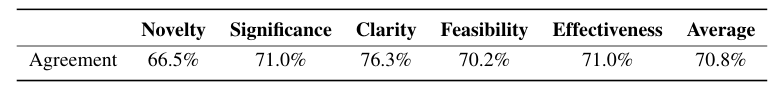
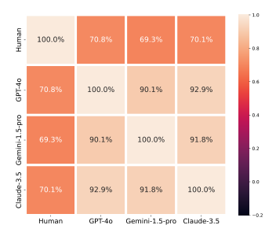
支持方论据 论文+rebuttal：Si et al. 统计的人-人一致率也只有 71.9%（ICLR）/ 66%（NeurIPS），所以 70.8% 的人机一致已达「人类水平」；rebuttal 补充 ELO 分数的 Pearson/Spearman 相关（Human–GPT-4o 89.3%/80.6%）。质疑方论据 推断：①一致率是三分类（胜/负/平）下的命中率，基线并非 50%，单独一个 70.8% 缺乏效力量化；②所有被评方法（除 Real Paper）都由 GPT-4o 生成，再由 GPT-4o 当裁判，风格自偏好无法排除——「CoI Novelty 超过人类论文」这一头条结论恰好出现在人机一致率最低的维度上；③ LLM 互评 90%+ 的同质性意味着「三个 LLM 裁判都同意」提供的额外证据很少。
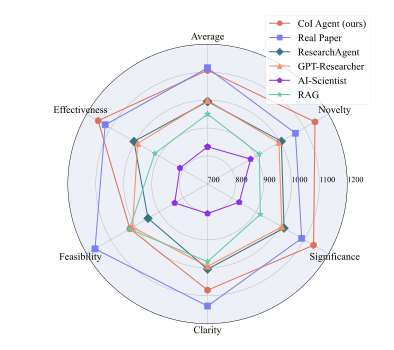
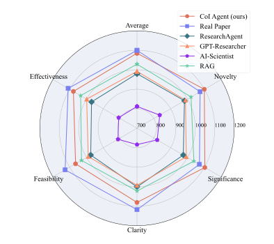
两种裁判下 CoI 都是自动方法第一（LLM 裁判下领先 GPT-Researcher 108 ELO，人类裁判下领先 RAG 56 ELO），Novelty/Significance 与人类论文持平或反超；但 Feasibility 是所有自动方法的共同瓶颈——人类裁判下 CoI Feasibility 1065 vs Real Paper 1127。有趣的细节（附录 Table 9）：裁判越强，对 CoI 的 Feasibility 越不客气（Claude-3.5 只给 953），说明「新颖但难落地」是稳定判断。
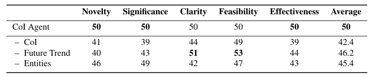
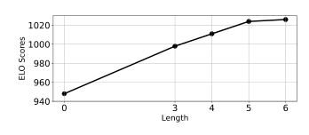
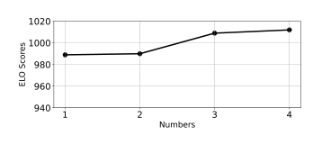
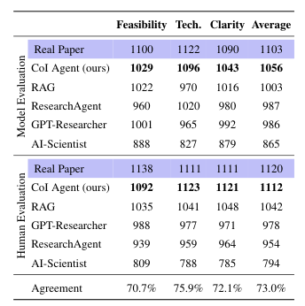
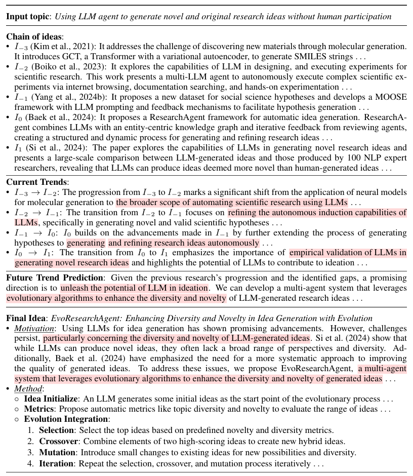
通读 main.py / agents.py / LLM.py / searcher / prompts（共约 1900 行）后的完整不一致清单，按严重程度排序。前文已展开的条目此处只列结论。
| 论文声明 | 代码实际 | 严重度 |
|---|---|---|
| 向前延伸时「LLM 判断是否存在有价值的后续工作」作为质量闸门 | audit agents.py:307 把已入链论文（而非候选论文）送去判相关，闸门恒通过；向前扩链实际只靠 embedding 相似度。向后 fallback（:368）同病 |
高：链质量的核心声明与实现不符 |
| Idea Arena：round-robin + ELO，换序双评，四个 baseline 复现 | audit 仓库无任何 Arena 评测/ELO/baseline 代码，主实验不可复现；仓库内「ELO」仅是分支选优的胜点计数（胜1/平0.5） | 高：核心实验证据不可核验 |
| GPT-4o-mini 仅用于「读论文并摘要核心内容」 | audit mini 还承担 novelty 查重判定（check_novel）和实验设计评审（review_experiment）两个关键判断 |
中：影响查新与评审质量的解读 |
| 向后延伸「LLM 从候选 references 中确定最相关的一篇」 | audit mini 提取时一次性输出排序 top-3，代码顺序取第一篇「可下载且判相关」者；另有论文未提的 S2-references + embedding 重排 fallback | 中：弱化实现 + 未披露路径 |
| （未提及）链的准入约束 | audit ①仅开放获取 PDF 可入链；②链长 <3 时跳过相关性检查强行凑链（relevant != "0" or len<min_chain_length） |
中：未披露的选择偏差 |
| novelty checker「决定是否需要再来一轮」 | audit while not novel: 无轮数上限；查重仅用标题+摘要（不读全文）；similar_paper 有未初始化即返回的潜在 NameError |
中：鲁棒性与能力边界 |
| 附录 prompt 原文（3 种思维模式；纯文本输出格式） | audit 代码为 4 种思维模式（新增 Imitate "Most recommended"）、XML 标签输出、额外的 <human> 输出——附录 prompt 与实际 prompt 存在漂移 |
低：影响精确复现 |
| 分支选优「与 Idea Arena 相同的成对比较」 | audit judge 提取了 prompt 中不存在的幽灵维度 relevance（每场双方 +0.5，不影响排序但暴露代码未校对） |
低：无害 bug |
| （工程配置） | audit ① main.py 参数名 "--max_chain_length t" 多了空格，CLI 设不了链长（永远默认 5）；② LLM.py 用 os.environ.get("is_azure", True) 读布尔，配置 is_azure: False 写入环境变量后是非空字符串 "False"，恒为真——非 Azure 用户按 README 配置会直接报错；③ main.py 默认 max_chain_numbers=1，论文主实验 K=3 |
低：可用性/默认值与论文设置不一致 |
| temperature / 采样设置 | code 全流程 temperature 0.7、max_tokens 4000（mini 摘要 16000），论文未报告 | 低：未披露超参 |
总体判断：生成管线（链构建 → idea → 实验设计）与论文框架图基本对得上，prompt 主体与附录一致，属于「诚实但粗糙」的开源：没有藏关键模块，但存在一个实质性的实现 bug（向前闸门判错对象）、评测部分整体缺失、以及多处论文措辞比代码更「智能」的美化（LLM 比选 → 顺序取第一；有限轮查重 → 无限循环）。
评分 5 (wMda) / 8 (AfFY) / 5 (E21D) / 5 (6L2R)，avg 5.75，AC 判「恰在录取线下」。评审过程创纪录地有 45 条回帖：作者投诉 wMda 全程失联（AC 认可）、投诉 E21D 用 LLM 写评审（AC："确实像"）、投诉 6L2R 先提分至 6 又因「自己投的同类论文收到负面反馈」降回 5（AC 认为不构成违规）。给 8 分的 AfFY 甚至公开反对 E21D 的 ethics flag。
作者辩护：CoT 让模型自己生成推理步，CoI 是把真实文献重组为演化证据链，粒度与信息来源完全不同。从代码看这个辩护成立——CoI 的实体是检索/排序/摘要管线，跟 prompting 技巧不是一类东西。但「贡献单薄」的底层担忧仍然合理：机制上就是结构化 RAG，四篇同期工作（SciAgents、ResearchAgent 等）都在做文献结构化，链只是其中最简单的一种结构。
作者用「人-人一致率也只有 71.9%」+ 补充相关系数回应，说服了 AfFY（提到 8 分）。但三点未被真正回应：Novelty 维度一致率最低（66.5%）却承载头条结论；GPT-4o 既当运动员又当裁判；一种评价协议、一个领域（AI）、50 个 topic 的证据面偏窄。meta review 把「评价指标需要更好的论证」列为第一条弱点。
评审逼出了两组补充实验，数据只存在于 OpenReview（已随本档案存档），对判断 CoI 真实价值很关键：
| 补充实验 1：对战 CoI 的得分（胜2/平1/负0，满分 100，50=打平） | Novelty | Significance | Clarity | Feasibility | Effectiveness |
|---|---|---|---|---|---|
| CoT（直接链式思考出 idea） | 4 | 1 | 14 | 25 | 0 |
| RAG | 8 | 7 | 23 | 44 | 7 |
| CoT + RAG | 20 | 21 | 40 | 48 | 18 |
rebuttal CoT 被打到近乎零胜——支持「链的价值在真实文献证据，不在链式推理形式」。当然裁判仍是 GPT-4o，上节的自偏好保留条款同样适用。
| 补充实验 2：加入并行工作后的 ELO 均分 | ELO |
|---|---|
| Real Paper | 1130 |
| CoI Agent | 1129 |
| AI-Researcher（Si et al.） | 1095 |
| GPT-Researcher | 1019 |
| ResearchAgent | 1017 |
| RAG | 952 |
| SciAgents | 836 |
| AI-Scientist | 822 |
rebuttal 应 wMda 要求补测 SciAgents（知识图谱路径采样流派），结果大幅落后——对本档案是个有用的横向数据点：在 idea 质量对战里，「链式演化叙事」压过了「本体图随机游走」。其他要点：作者试过 Graph-of-Ideas，表现不如链（归因于推理复杂度）；无相关文献时 CoI 退化为普通 RAG；约 $0.1 用于选优、$0.5 生成一个 idea。
不是方法有错，而是贡献的天花板：一个诚实但简单的结构化 RAG 管线 + 一套本身可信度就受质疑的评价协议，互相无法为对方背书。评审驱动的补充实验（CoT 对战、SciAgents 对比）反而是全文最有说服力的证据，可惜出现在 rebuttal 而非正文。这份 OpenReview 记录本身也是「LLM 时代同行评审失灵」的样本：疑似 LLM 写的评审、全程失联的评审、因个人投稿受挫而降分的评审，集中出现在同一篇论文上。
把 CoI 放进本档案的坐标系（idea 生成系统的文献组织方式），它代表「时间线/演化链」这一派的最简实现。
| 系统 | 文献组织结构 | 结构怎么用 | 代价 |
|---|---|---|---|
| CoI Agent（本篇） | 线性演化链（anchor ± 引用扩展，≤5 篇 × K 条） | 提取相邻演化趋势 → 外推未来方向 | ~$0.50/idea；强依赖 OA 全文 |
| ResearchAgent | 引用图 + 实体共现知识库 | 核心论文扩邻居 + 实体注入 | 需预建实体库 |
| SciAgents | 本体知识图谱路径采样 | 图上随机游走产生概念组合 | rebuttal 对战中大幅落后 |
| Vanilla RAG / GPT-Researcher | 无结构（top-k 平铺） | 直接塞 prompt | 便宜但易被弱相关文献带偏 |
档案定位建议：方法可信度——链构建管线真实可跑（有 50 个 case 的完整输出佐证），但主实验不可复现、向前把关有实现 bug；结论可信度——「链式组织优于平铺」方向上证据一致（消融 + rebuttal 对战），具体 ELO 数字宜打七折看待。
{kind=link}
{kind=link}
{kind=link}
{kind=link}
{kind=link}
{kind=link}